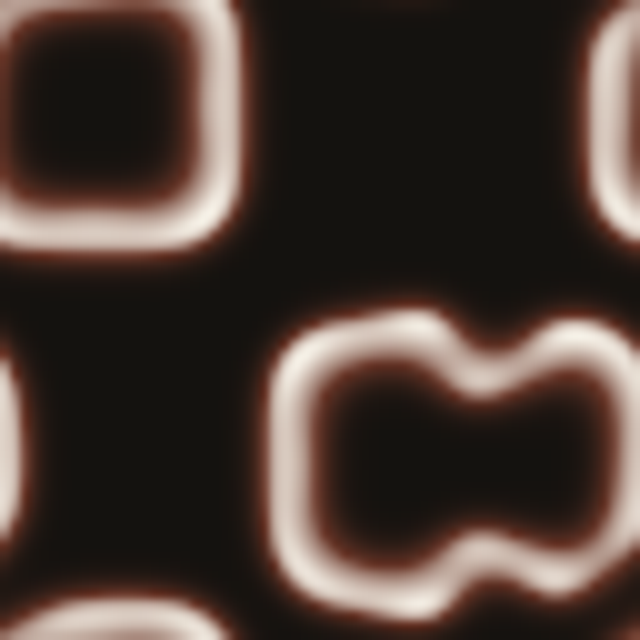
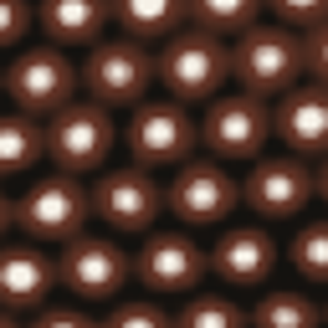

COMMONS 公地 · 人工生命生成系统 · 评审材料 · 2026.11
让涌现
可见、可听、可复现
康威生命游戏、Lenia 与反应扩散，三种规则系统在同一个培育台里生长。系统持续识别滑翔、振荡、合并、分裂、出生与死亡潮，把它们转译成声音事件；配方由基因、环境与种子固定，同一配方生成同一段演化。

扫码进入
37jalf2ykndtrfn6iou.traesite.cn
37jalf2ykndtrfn6iou.traesite.cn




01三种规则，同一件事
复杂结构不必被直接设计，它可以从局部规则里长出来。
CA
康威生命游戏：滑翔机、振荡器、稳定块。
CF
Lenia 连续场：边界更柔和，群落会呼吸。
RD
反应扩散：斑点、条纹与螺旋自行生成。
培育台挑战花园家谱
一个生命，两种玩法：培育是主线，挑战给出目标形态，作为模式练习。
02声音是观测通道
密度 → 音量
熵 → 音色亮度
活跃度 → 节奏
周期性 → 节拍规律
五声音阶量化，把连续状态收进可听音集；十一个声部可单独换音色、调声像、加混响。
双耳对比：同一颗种子放进两个环境，左右耳各听一个，其余条件固定，差异直接显现。
声音不是配乐，是把结构变化转成可听事件；参与者据此比较不同环境下的演化。
03可复现，才可比较
| 模型生命 | 分数 | 行为 | 稳定 |
|---|---|---|---|
| Gray–Scott 斑点 | 100.0 | 斑点 | 480 |
| Gray–Scott 迷宫 | 100.0 | 斑点 | 480 |
| Gray–Scott 六边 | 61.7 | 斑点 | 480 |
| Lengyel–Epstein 条纹 | 38.7 | 条纹 | 12000 |
GET /api/research/model-lives
POST /api/research/replicate
{"modelId":"model-gs-spots"}
POST /api/research/replicate
{"modelId":"model-gs-spots"}
服务端按模型卡固定参数与种子重跑；神经代理只排序，最终分数由重跑确认。
榜单写入外部存储，实例重启不丢；未配置时如实返回 ephemeral。
3 分钟路线首页听声音随机孵化分裂存入花园挑战模型复现家谱
Honest boundary · 诚实边界
评分是结构统计相似，不是参数反演。不宣称恢复真实生物参数，也不宣称复现实验的全部动力学。
模型卡只描述结构统计与行为指纹；代理不是裁判，隐藏测试集 Top-3 召回 95%（GS）/ 98.5%（LE）。
Stack · 技术栈
Canvas 2D · Web Audio API · Node.js 20 · 确定性种子 · 外部 JSON 存储 · 降阶 MLP 代理 · Node test runner
测试 43/43 · 构建 442.7 KB · 部署 dep_6af73eb2f7d7881f2f484d05